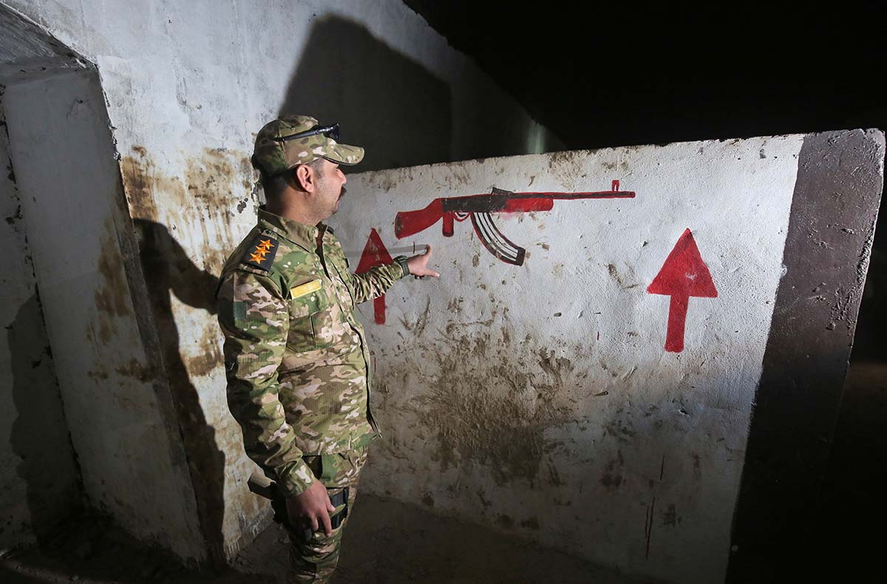

Successive military campaigns and coordinated, international counterterrorism pressure are constricting Islamic State finances and disrupting territorial control. The Islamic State’s legitimacy, derived largely from successfully “governing” and extracting resources from territory, is likely to continue to diminish unless the group adopts new behaviors. The Islamic State’s rapidly shifting fortunes demonstrate to other militant groups that maintaining a state is far more difficult than operating as a decentralized terror organization.
From a U.S. perspective, the most significant potential behavioral shift is the Islamic State’s use of remaining safe havens to operationalize an unprecedented number of foreign fighters. These fighters, along with their new militant bona fides, could establish new affiliates, aggravate existing local socioeconomic grievances, or facilitate attacks in countries where the United States has strategic interests.
The migration of foreign fighters precipitated by the waning Islamic State will not be the first time the world has had to deal with foreign fighters leaving one conflict zone to potentially foment another. After September 11, 2001, al Qaeda’s “brand recognition” helped fighters at least partially co-opt local movements in the Arabian Peninsula, Horn of Africa, Northern Africa, and Southeast Asia. Attacks perpetrated by these local affiliates have killed thousands. Some, like al Qaeda in the Arabian Peninsula, remain active and intent on perpetrating external operations.1
In 2011, CSIS’s Transnational Threats Project and Homeland Security & Counterterrorism Program examined key factors in the rise of al Qaeda affiliates. The case studies revealed only a small minority of the affiliates deemed “ideological resonance” or “common interests with al Qaeda Core” as leading them to align themselves with al Qaeda.2 Instead, the most common reasons for an affiliate’s rise were some combination of charismatic, experienced leadership; disaffected local populations; and personal patronage links to the organization’s central leadership. Though al Qaeda had a codified ideology, understanding where the group’s networks exploited simmering local discontent better explained where al Qaeda affiliates grew.
"The youth joining the Islamic State today, including many of the thousands who streamed into Syria, have little understanding of, or commitment to, the ideology for which they are signing up."
The Islamic State may follow a similar pattern to that of al Qaeda. Former Central Intelligence Agency analysts Phil Mudd and Andrew Liepman observed that “the youth joining the Islamic State today, including many of the thousands who streamed into Syria, have little understanding of, or commitment to, the ideology for which they are signing up.”3 It is possible that most would-be fighters join because of their friends and family rather than fervent belief in the ideology of the Islamic State. Terrorism scholar Daniel Byman noted that although highly ideological, the Islamic State itself also often subordinated its ideology to its strategic goals, and that the group’s obfuscated ideology made it more resilient.4
Recent studies have instead focused on instrumental “pathways” approaches to understand patterns among how militants traveled to Iraq and Syria.5 These studies yield two common phenomena among the migrants — ones that echo factors similar to rising al Qaeda affiliates after September 11, 2001.
The first similar factor is that fighters often received assistance from a preexisting network of “transnational activists,” facilitators, or friends who had already made the trip.6 Because of those connections, they often exhibit path dependency with fighters seeking to join the groups since their friends did.7 As an example, a group of high schoolers in Lunel, France, began traveling to Syria in October 2013. While the first cohort moved toward Syria, a friend remaining in Lunel contacted French fighters already in Azaz, Syria, to arrange for safe passage. After one member of the Lunel group switched allegiance from Jaish Mohamed to the Islamic State, subsequent travelers from the Lunel group joined Islamic State—likely due to the presence of their friends. In all, 20 individuals from the Lunel group used the same facilitation and mobilization pathway to travel to Syria.8
The second similar factor, as terrorism scholar Thomas Hegghammer notes, may be that host-nation governments are often unwilling or unable to stop foreign fighters from traveling in the first place.9 Due largely to U.S. pressure and international efforts like UN Security Council Resolution 2178, some nations have limited travel to Iraq and Syria. In response to these measures, Islamic State leaders encouraged those willing but unable to travel to conduct attacks where they could. While based in Syria in November 2016, French militant Rachid Kassim told Jihadology’s (a militancy monitoring website) Amarnath Amarasingam that “at the beginning, the caliphate called for hijra [travel to the Islamic State] . . . now, it is best to launch attacks in dar ul kufr [land of the unbelievers]. Because hijra is very difficult now.”10 In May 2016, Islamic State spokesman Abu Muhammad al Adnani called for attacks in Europe and the United States saying “The smallest action you do in their heartland is better and more enduring to us than what you would if you were with us. If one of you hoped to reach the Islamic State, we wish we were in your place to punish the Crusaders day and night.”11
In addition to people “mobilizing in place,” foreign fighters are beginning to return. Thus far, approximately 20 to 30 percent of foreign fighters have left Iraq and Syria; between 1990 and 2010, roughly 11 percent of foreign fighters became active security threats after migrating.12 If migrating fighters return to violence at rates consistent with previous waves of fighter migration, there may be up to 1,100 experienced fighters seeking to conduct further attacks who have left Iraq and Syria.
An eventual fall of Islamic State strongholds in Mosul and Raqqa will likely dislodge even more foreign fighters and foment greater movement—be it a return to one’s home country or travel to a new front.
The numbers of returning fighters may increase dramatically in the near future. As of Spring 2017, foreign militants remaining in Iraq and Syria are defending against anti-Islamic State campaigns, making them less willing or able to leave.13 However, an eventual fall of Islamic State strongholds in Mosul and Raqqa will likely dislodge even more foreign fighters and foment greater movement—be it a return to one’s home country or travel to a new front. Concurrently, as the Islamic State loses territory, the group may carry out more spectacular terrorist operations abroad to signal continued relevance and power.14
Owing to geographic isolation, improvements in transportation security, and increasing fusion of law enforcement and intelligence efforts, the United States will likely remain a much harder target for migrating fighters to strike. Although such attacks cannot be ruled out in the future, they are more likely to be “episodic tragedies, not national security catastrophes.”15
The United States is more insulated from migrating fighters than our treaty allies or competitors.
1. Eric Schmitt and David E. Sanger, “Devices Seized in Yemen Raid Offer Some Clues to Qaeda Tactics,” New York Times, March 1, 2017, https://www.nytimes.com/2017/03/01/world/middleeast/yemen-intelligence-raid.html.
2. Rick “Ozzie” Nelson and Thomas M. Sanderson, Confronting an Uncertain Threat: The Future of Al Qaeda and Associated Movements (Washington, DC: CSIS, September 2011), https://csis-prod.s3.amazonaws.com/s3fs-public/legacy_files/files/publication/110826_Nelson_%20ConfrontingAnUncertainThreat_Web.pdf; David Gordon and Samuel Lindo, “Jemaah Islamiyah,” CSIS, November 2011, https://csis-prod.s3.amazonaws.com/s3fs-public/legacy_files/files/publication/111101_Gordon_JemaahIslamiyah_WEB.pdf; Zack Fellman, “Abu Sayyaf Group,” CSIS, November 2011, https://csis-prod.s3.amazonaws.com/s3fs-public/legacy_files/files/publication/111128_Fellman_ASG_AQAMCaseStudy5.pdf.
3. Andrew Liepman and Philip Mudd, “Lessons from the Fifteen-Year Counterterrorism Campaign,” CTC Sentinel 9, no. 10 (October 2016): 12, https://www.ctc.usma.edu/v2/wp-content/uploads/2016/10/CTC-SENTINEL_Vol9Iss1012.pdf.
4. Daniel Byman, “Understanding the Islamic State—a Review Essay,” International Security 40, no. 4 (Spring 2016): 136.
5. Timothy Holman, “‘Gonna Get Myself Connected’: The Role of Facilitation in Foreign Fighter Mobilizations,” Perspectives on Terrorism, 10, no. 2 (April 2016): 2–23.
6. Ibid., 4.
7. Hegghammer notes that mobilizing foreign fighters were likely path-dependent, that is, were more likely to follow the same trajectory, as the mobilization for the Anti-Soviet Jihad in Afghanistan. Fighters today likely face the same path dependency in migrating to new areas. Hegghammer, “The Rise of Muslim Foreign Fighters,” 68.
8. Holman, “‘Gonna Get Myself Connected,’” 13–14.
9. Hegghammer, “The Rise of Muslim Foreign Fighters,” 68.
10. Amarnath Amarasingam, “An Interview with Rachid Kassim, Jihadist Orchestrating Attacks in France,” Jihadology, November 18, 2016, https://jihadology.net/2016/11/18/guest-post-an-interview-with-rachid-kassim-jihadist-orchestrating-attacks-in-france/.
11. “Islamic State calls for attacks on the West during Ramadan in audio message,” Reuters.
12. Charles Lister, “Returning Foreign Fighters: Criminalization or Reintegration?,” Policy Briefing, Brookings Doha Center, August 2015, 2, https://www.brookings.edu/wp-content/uploads/2016/06/En-Fighters-Web.pdf.
13. Zana Gulmohamad, “Unseating the Caliphate: Contrasting the Challenges of Liberating Fallujah and Mosul,” CTC Sentinel 9, no. 10 (October 2016): 16–27, https://www.ctc.usma.edu/v2/wp-content/uploads/2016/10/CTC-SENTINEL_Vol9Iss1012.pdf.
14. Byman, “Understanding the Islamic State—a Review Essay,” 145; Seth G. Jones and Jim Newell, “ISIS Will Become More Deadly Before It Dies,” Slate, November 17, 2015, https://www.slate.com/articles/news_and_politics/foreigners/2015/11/isis_will_become_more_deadly_as_it_loses_territory.html.
15.Liepman and Mudd, “Lessons from the Fifteen-Year Counterterrorism Campaign,” 13; Brian Michael Jenkins, “Inspiration, Not Infiltration: Jihadist Conspirators in the United States,” House Oversight and Governmental Reform Committee, Subcommittee on National Security, Subcommittee on Health Care, Benefits, and Administrative Rules (2015), 5–6, https://www.rand.org/pubs/testimonies/CT447.html.